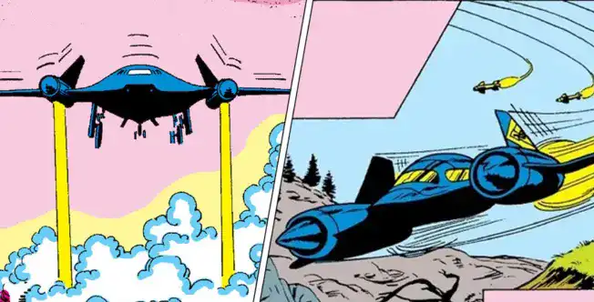
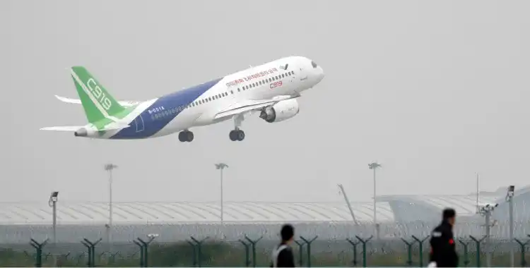
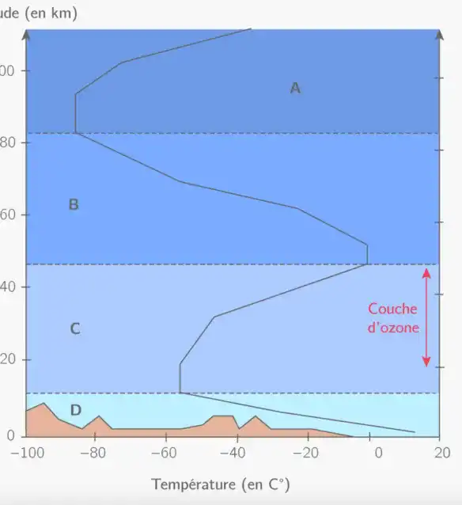
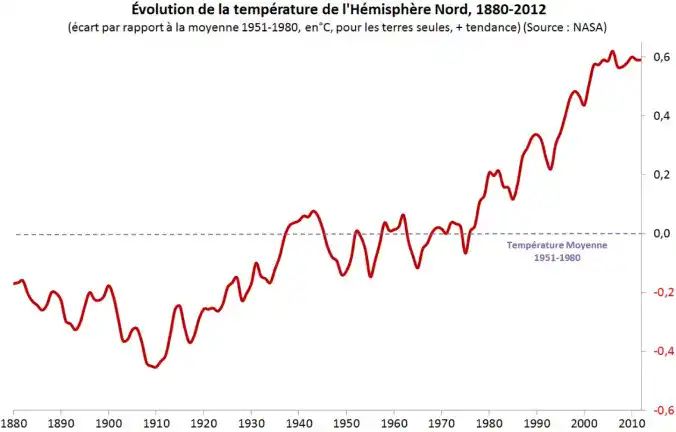

Accueil > Impact
Les X-Men et leur jet privé se soucient-ils vraiment de leur empreinte carbone ?
Se déplacer en avion, on l’admet, c’est rapide et pratique, mais est-ce sans conséquences pour l’environnement ? Un appareil qui émet des centaines de kilos de CO2 ne semble en effet pas être la meilleure option pour un trajet éco-responsable.
Si les X-Men se déplacent à l’aide de leur puissant avion, ce n’est pas sans conséquences pour la planète. En effet, ils utilisent le Blackbird pour se déplacer lors de leurs missions et autres rendez-vous de super-héros. Ce dernier est un avion espion américain, possédant une consommation énergétique conséquente. Cet avion consomme plus de 500 litres de carburant à la minute, et pour cause, il s’agit d’un avion militaire. Ce genre d’avions privilégie la puissance au rendement, ce qui nous donne évidemment un très mauvais bilan carbone. Les avions sont, malheureusement, le moyen de transport le plus polluant. Pour un aller- retour de 1000km, la consommation d’énergie est de 76kg de carburant. Quant au bilan CO2, il est de 250kg de CO2. En comparaison, le TGV possède un bilan carbone de 3,2kg de CO2 pour la même distance. Alors si une heure d’avion émet 13 fois plus de CO2 qu’une heure de route, on peut se questionner sur les effets du dioxyde de carbone sur notre environnement.
Sur Terre, ce sont les rayons solaires (ultraviolets) qui créent de la chaleur et modifient la température globale. Cependant, ces rayons ne nous atteignent pas directement depuis le soleil, ils sont filtrés au niveau de notre atmosphère. En effet, entre 20 et 50km d’altitude se situe la couche d’ozone, une concentration d’ozone qui absorbe une grande partie des rayons ultraviolets qui pourraient être néfastes. Cette couche permet de filtrer les rayons UV-B et de créer l’atmosphère. Ainsi, si cette couche d’ozone se voit diminuer de volume, les rayons ultraviolets émis par le soleil pourraient modifier l’atmosphère et la température globale de notre planète.
C’est ici qu’entrent en jeu les gaz à effet de serre. L’effet de serre est un phénomène naturel, qui fait qu’une partie de l’énergie émise par la terre est retenue dans l’atmosphère sous forme de chaleur (vapeur d’eau en grande majorité). Cependant, si ce phénomène est tout à fait normal et permet en partie de chauffer notre planète, il existe un effet de serre non naturel, l’effet de serre renforcé. Pour cause, des gaz émis en grandes quantités par les activités humaines récentes augmentent et aggravent l’effet de serre. Ces gaz à effet de serre viennent se concentrer dans l’atmosphère et sont alors responsables d’une augmentation de la température globale. L’un des principaux gaz concernés est le dioxyde de carbone, gaz que les avions rejettent en grande quantité.

«Le transport aérien représente actuellement 3% des émissions de CO2 avec un effet sur le réchauffement de l’ordre de 6%. »
Ainsi, d’après l’ouvrage La Pollution de l’air (sources, effets, prévention), le GIEC (groupe d’experts intergouvernemental sur l’évolution du climat), dans un rapport de 1995, attribue en partie aux activités humaines le réchauffement observé au cours de ce siècle qui est de 0,3 à 0,6°C. Ce réchauffement dû aux gaz à effet de serre atteindrait 1 à 3°C d’ici 2100.
Les avions contribuent donc grandement à l’effet de serre, de par leurs importantes émissions de CO2, affectant ainsi négativement le climat.